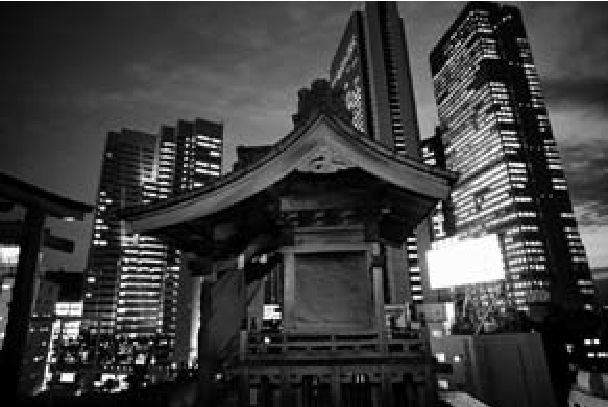

今天，许多人首先将现代日本看成一个经济强国。很多论者认为，日本将堪称空前的富裕、极其稳定的社会和显而易见的和谐结合在一起，是当今最成功的工业（甚或后工业）经济体。尽管近期遭遇了经济问题，尽管中国正在迅速崛起，根据大多数指标，日本依然是世界第二大经济体，排名仅次于美国。 [1] 全世界都在消费日本的商品和文化产品，包括动画片、家用电子游戏、汽车、半导体、管理技术和武道。
综合各方面来看，日本的上述形象使其成为当今世界“现代性”的象征。然而，在许多非专业人士眼中，日本这个国家仍然是一个谜，它既陌生又熟悉，既传统又现代，甚至既“东方”又“西方”，如蒙太奇一般令人困惑。我们将会看到，这样的困惑部分源自一种假设，即认为现代性在所谓的“西方”只引起了轻微的文化失谐，而在日本及其他国家，现代性的外在特征却显得缺乏连贯性，甚至令人费解。这一假设的根基在于现代性与欧美历史的深层纠葛。事实上，在当代世界，许多人认识到上述纠葛，并且正是据此抗议全球化与资本主义：在很多人看来，来势汹汹的现代之潮象征着西方的扩张。
让我们略作停顿，考察下述切近的景观，以为实例。
日本和韩国获得2002年国际足联世界杯决赛阶段比赛联合举办权时，欧洲曾多少抱有疑虑：1994年美国世界杯的东道主富有但几乎不懂足球（或者更确切地说是不懂“英式足球” [2] ），举办世界杯是为尝试在美推广足球，首次由亚洲国家主办的世界杯，会不会成为美国世界杯的翻版？欧洲公众知美国少，知韩国、日本这样的“远东”国家更少：他们知晓任天堂、索尼和大宇，他们知晓空手道和跆拳道，他们知晓珍珠港、广岛和朝鲜战争；他们不知道日本的“J联赛” [3] 是世界上盈利状况最佳的足球联赛之一，他们当然更无法预见，韩国能闯入半决赛（在半决赛中负于德国），一路击败意大利和西班牙这样的“欧洲列强”成员，最终取得的成绩要好于赛前那些大热门，比如英格兰、阿根廷及卫冕冠军法国。大体而言，日韩两国对足球抱有巨大热情，并有很好的竞技水平，这令欧洲感到惊讶。
有一个问题值得思索：为什么会有那么多人对足球在东亚获得的广泛关注感到惊讶？原因部分应归结于那些广为流传的日本形象，“西方”公众一直被那些形象包围着。例如，在报道世界杯时，庄重的英国广播公司为赛事制作了两段优美的宣传片。第一段在赛事开始前几周播放，时长两分钟，采用日本动画风格——如今全世界上过荧屏的卡通作品中，日本动画占60%，它们作为媒介传播极广。短片以充满激情的旁白开场：“每隔四年，地球四个角落的伟大英雄就会聚集，去竞争人类所知的最高奖项……”，横版卷轴过关游戏和武侠片的爱好者一定熟悉这样的旁白。背景是日本汉字和韩国的文字，字符程式化地闪烁、不祥地跳动着。然后短片突然转换到了科幻般的场景：一只足球像火箭一般被踢进空中；电脑屏幕和霓虹灯一边追踪着足球，一边闪烁并发出蜂鸣；有未来感的浮力舱托着一个人，那人有条闪烁的、金属的义肢（原来是具有超人般天赋的法国队队长齐达内）；接着是一连串动画化的足球英雄（没有一个是日本或韩国球星）掠过（日本）城市中布满霓虹的街道，去追寻那只“火箭”。
这段时长两分钟的宣传片老套且程式化，充斥流行文化元素，满含暗示，将日本表现为具有未来感的酷炫乌托邦，表现为生控体和电子计算机化的科幻王国——威廉·吉布森在其经典科幻小说《神经浪游者》（1984年初版）中极好地描绘了此类国度。此外，似乎没有任何日本人或韩国人与实际的足球有关系，虽然片中有许多人在街头赞赏地看着那些外国足球英雄。
转播每场比赛时都有开场白，第二段宣传片即穿插其间。这段宣传片的影像呈现出远为浪漫的蒙太奇效果：首先是慢镜头——一座湖边寺庙伴着晨曦，接着是佛像眼部的特写，飘扬的日本国旗，几名相扑力士，飘扬的韩国国旗，然后是一些锦鲤。此时，一只足球被踢进模糊的光斑，并将我们带往以下影像：又是佛像，一幅城市景观（有霓虹灯和一座寺庙），一个足球场（配上一名巴西球员），一些传统韩国舞蹈，大卫·贝克汉姆，再添上些韩国舞蹈，又一名相扑力士，又一座寺庙，一个表现艺伎（或妓生） [4] 的慢镜头，然后是一个缓慢、优美的富士山镜头。这时宣传片突然改变了节奏，我们好像被领入了现代：一列新干线子弹头列车冲入视野，更多不知名的球员，更多列车，更多霓虹灯和可以看见电子屏的繁华街道（电子屏上映着球员），更多传统韩国舞蹈，最后是足球划出的光带在大鸟居（日本神道教中神圣的门）的立柱间闪烁，仿佛鸟居就是球门。
这些意象无疑陈腐且缺乏想象力，却恰恰充分体现了日本在所谓的西方是如何被表征的。姑且不论日本足球运动员在这些宣传片中的诡异缺席，我们看到的是一种典型的混合物——糅合了传统文化（相扑、艺伎、富士山、佛教圣像）和超现代性（子弹头列车、霓虹灯闪烁的城市、生控体）、糅合了神秘元素和科技元素。西方观众本已十分熟悉现代性的外在特征，而日本被表现为以某种方式搬用了（而后又改变了）那些特征的谜一般的“他者”。相扑力士和高速列车出现在同一部宣传片中，制作方认为会使观众产生震动。可这样的组合何以会有冲击力？
关键在于，日本之所以如此引人入胜，不仅仅是因为其文化差异，还因为一个事实，即日本同时还是一个现代的、高科技的非西方国家。从这一通俗的层面来分析，日本显现吸引力，是因为它兼有“东方”传统的悠久历史和奇妙的“西方”现状，观众（或者说英国广播公司）难以消化其中的现代性和西方元素。
换句话说，思索现代性的意义及其完整性，是抱有兴趣的观察者考量日本的另一出发点，因为人们普遍认为日本是历史上第一个“非西方”的现代国家。19世纪中期，日本摆脱了明显的国际孤立，自那时至今日，就是一段现代日本的历史。事实上，这段历史记录了一个国家在遭遇西方强国后与随之产生的影响角力，并同时接触现代性思想和科技的过程。政治层面和思想层面的调整，是上述时期的关键特征。实际上，日本的经历为我们提供了迷人的视角，让我们得以观察国家应对文化、思想、社会、政治及科学变革等复杂问题时的种种方式，尤其当这种应变的需要源自美国舰队突如其来（且不请自来）的造访时。 [5]
这本《现代日本》不指望能面面俱到地介绍这一日本历史上令人激动的重要时期，而是会围绕两点思考一系列问题：第一点是称日本为“现代”社会意味着什么；第二点是“现代”这一范畴在不同时期对于分属不同群体的日本人又意味着什么。目前存在这样一种常见的看法，即认为日本在长期孤立期间——或称锁国（17世纪至19世纪）期间——完全与外部世界隔绝，因此接纳其他文化本身便是日本现代性的关键特征之一。上述看法是关于日本历史的假设之一，在后续章节中，本书将挑战多个此类假设。第二次世界大战期间，日本在太平洋战争中惨败，当时的日本显然处境孤立，但即使在那样的时期，文化及社会层面的存续与变化仍然以某些方式相互作用——我们将对此加以考察，由此挑战一种假设，这种假设认为日本原有的传统在战后产生了某种断裂。
最后，尽管本书采用的许多素材不可避免地聚焦于政治、思想及社会精英如何参与日本社会意义深远的转型、如何看待日本的现代性问题，但本书同样要观察普通人是如何体验这些转变的——普通人不仅是历史大潮的消极接纳者，也是在为他们自己塑造现代国家的积极行动者。在某些方面，这种迈向民族自决的趋势是现代性的关键特征（同时也是核心问题）之一。
换言之，这是一本关于日本如何卷入现代性的小书，但同时这本书也在探讨如何借日本的经验来帮助我们重新思考“现代”本身的意义和维度。并不是现代性落在了日本，而是日本通过勤勉、艰辛、流血和创新，将自身打造成了今日我们所知的繁荣的现代国家。“现代”一词的含义仍然极具争议，而当我们试图理解现代的维度和历史现实时，日本这一样本有助于凸显涵盖不同国家多样经验的必要性。现代性与西方或许是相关的，但并不是同一的。
一般的（错误）观念认为，“现代”本质上是一个具有时间性或历史性的术语，是指与当代相邻接的一段时期。尽管上述义项可用于日常用语，但思考该词更具专业性和实质性的含义，将会远为有益且有趣。

图1 一座建在屋顶上的神社
在专业性和实质性的框架下，“现代”这一术语是指思想、社会、政治、科学之基准及实践所呈现的某种程度的特殊分布状态。现代乃是相关原理的群集，而不仅指一段时期。据此定义，我们将能够追踪“现代”在不同时期、在不同国家或文化环境中的产生：例如，欧洲的现代是否早于日本？日本的现代是否早于俄罗斯？如果答案为是，原因何在？我们还将能够针对现状提出具有争议性的问题：日本现代吗？如果答案为是，如何解释日本的现代显得迥异于（比如说）英国的现代？这一重要问题也可以换一种提法，即现代有哪些元素是本质的，又有哪些附着于文化土壤？最后，如果能够用这种方式观察现代的产生，我们是否就有可能辨识带有几分“后现代”特征的那些条件？现代在有些地方是否已成为过去、是否已完全出离当代？现代是否在未来保有位置？
上述思路带出一些相当危险的伦理问题。如果我们认可现代事实上是发展的一个阶段，我们如何可能避免（以及应该如何避免）以这些基准来评判各个国家的发展状况？换言之，现代这一观念是否夹带线性历史进程的概念，而线性历史进程的概念本以当代欧美理念为顶峰？在第三章，我们将会看到，上述问题早在1940年代就已成为日本知识分子关注的焦点，因为他们努力寻找“超克现代性”的路径。这一超克现代的吁求同日本在亚洲建立帝国的计划纠结在一起。在战后，它又与呼吁日本和亚洲对美国“说不”相联系。
“现代”这一概念显得如此重要，我们又如何定义它的含义和内容？遗憾的是，尽管大多数评论者均认为存在各种症候可助我们解析现代，但人们仍未就现代的精确维度达成共识。比如，一个社会如果显现出工业化和城市化的迹象，就可能会被认为是现代的。一个经济体制如果以遵循资本主义原则建立的市场经济为荣，它就可能是现代的。一个现代的政治体制当围绕核心的民族国家来组织，受大众民族主义的支持，有一个代议政府（可能是民主制）来表达民意。上述政治体制依赖所谓的“现代意识”，即要求具有对个体尊严和个体天赋权利的体认。它假定人们具有一定文化素养、能够（通过教育及公共领域）获取信息，从而能够为自己的最佳利益作出理性选择。这种对理性的强调是基本的：现代的特征就是坚守理性特质、摒弃迷信（或许还有宗教）；坚守科技发展，即社会的机械化。现代人拥有科技之力，得以尝试控制自然、为破坏性武器松绑、用现代医学拯救生命。工业机器使世界变小，意义深远的全球化之所以可能，也是因为工业机器提供了条件：火车就是遍布各处的现代先驱。
上述特质中有许多似乎能在18世纪欧洲的启蒙运动中找到源头，这并非偶然，因为许多评论者正是将启蒙运动看作现代的起源。尤其是，现代这一概念似乎继承了启蒙工程对进步的信念、对普适性真理的热望。然而，记住一点很重要：观察这一观念群集在欧洲的历史起源与声称这些观念本身实质 上为欧洲所有，这两者之间存在区别。其实，后一种主张恰同启蒙运动的普遍精神背道而驰。而无论是支持还是反对现代性在全球流布的人，无论其身在欧洲还是处在欧洲之外，都经常陷于这种混乱。也许更好的办法是将现代的条件放到对一个由资本主义产业构成的世界 的各种潜在回应中来观察。
我们将会看到，现代日本的历史包含了对这一重要政治问题的各种立场：一些人企图以拒绝西化的名义拒绝现代性的所有外在特征；而另一些人希望保留日本的传统，但采纳现代理性中“价值中立”的方面；还有一些人认为日本只有实行西化才能真正变得现代，因而支持完全舍弃日本的传统。在某些方面，上述对于身份认同以及传统在社会中的位置的社会文化焦虑都是现代的标志，并且不仅见于日本，而且见于世界各地。现代的特质不仅包括科学方面的重大进展，还包括社会失范和政治动荡。
事实上，对于许多人而言，现代化进程之所以令人如此兴奋又烦恼，正是因为传统与现代之间动态的相互影响。在某些方面，现代这一概念在形成时被赋予了与传统对立的内容——超越安排生活的传统（也即“非理性的”）方式。然而，认为现代应当完全摒弃文化传统的观点属于极端的见解——乔治·奥威尔在小说《1984》中描绘的著名图景就展现了此种见解可能导致的结果。换言之，现代社会不应该意味着文化多样性的终结，但现代人应当换一种方式同他们的传统相处：人们应当识传统为传 统 ，而不应认传统为真理 。
话虽如此，为找到传统与现代之间稳定健康的关系而进行的调整过程困难重重，尤其因为人们赖以衡量成就的现代性标准都与文化脱不了干系。不管是不是喜欢，大多数评论者趋向于退而倚欧洲启蒙遗产为原型，这就导致我们回头陷入了帝国主义的危险。因此，现代社会的关键课题之一就是学习在看到现代时如何进行辨识，即便它看起来不符合我们的经验。否则我们就是在冒险将所有文化差异都视为现代性发展受阻的证据。
本书在一定程度上遵循年代顺序。第一章审视了日本同时经历的两个遭遇。其一遭遇西方世界。1853年，美国海军准将佩里抵达日本，强令“孤立主义者”日本向国际贸易打开国门；其二是遭遇现代思想和社会力量之潮，这些思潮于德川幕府时期就已在日本内部酝酿。现代和西方在此重叠，但并不合而为一。在日本突然出现的现代性来自日本自身。这一章讨论了现代日本常被忽略却至关重要的一个侧面，即历史连续性。
第二章转向明治时期，展现日本在19世纪下半叶如何努力将自身转变为现代帝国。在这一有时被称为“日本启蒙”的时期，日本人热烈地接纳了现代性及其外在特征。第三章推进至20世纪初期，日本成为亚洲强大的帝国主义国家，先后击败清王朝统治下的中国（1895年）和沙皇俄国（1905年），而后企图通过所谓的“大东亚战争”建立庞大的帝国。本章尤其聚焦于现代工业和政治理念的发展如何助推（及反对）帝国主义计划。这一时期的一个关键特征就是某些有影响力的知识分子及政治领袖欲将日本的战争定义为超克现代的尝试。
第四章关注第二次世界大战的结束、盟军占领及日本在战后迅速的经济增长。本章讨论了当时实施的各种社会和政治改革，尤其关注日本社会和文化如何试图理解新的战后现实——或许是在走向后现代认同。
第五章探讨日本在后冷战世界的认同和角色，聚焦于一个关键性问题，即日本有多大能力及意愿去解决其帝国主义残留和“受害者意识”这样的课题。上述在当代日本仍亟待解决的问题决定着日本能否在国际体系中成为“正常国家”。
最后，在“后记”这一章中，本书将思考在21世纪初生活在日本意味着什么。